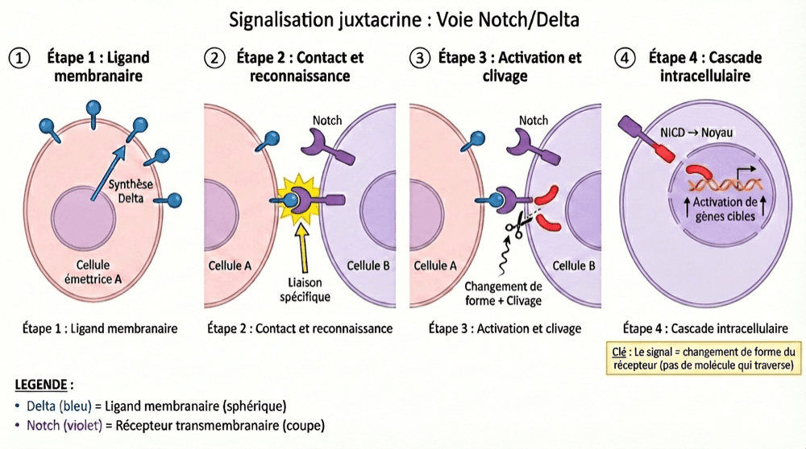

Notch/Delta : la poignée de main entre cellules
Deux cellules qui se touchent, et rien qui passe de l'une à l'autre.
Le signal, ici, c'est le changement de forme du récepteur.
La fiche précédente a posé le premier mécanisme de la communication juxtacrine : les jonctions GAP, des canaux qui relient directement les cytoplasmes, et dans lesquels les ions et les petites molécules traversent physiquement. Le second mécanisme part de la même situation — deux cellules adjacentes, un contact physique obligatoire — mais fonctionne à l'inverse.
Un mot d'abord, parce qu'il va revenir dans toutes les fiches qui suivent : un ligand, c'est la molécule qui porte le signal — une hormone, un neurotransmetteur… Ici, il a une particularité : il n'est jamais libéré dans le milieu, il reste accroché à la membrane de la cellule qui l'émet. Le principe tient alors en une phrase : une protéine ancrée à la membrane d'une cellule (le ligand membranaire) se lie à un récepteur sur la membrane d'une cellule adjacente → activation d'une cascade de signalisation. Et rien ne traverse.
- 1 La cellule émettrice exprime un ligand membranaire. Par exemple la protéine Delta, qui reste ancrée à sa membrane (contrairement à une hormone, qui est libérée et part dans la circulation).
- 2 Les deux cellules se touchent, et la liaison se fait. Le ligand membranaire de la cellule A se lie physiquement au récepteur transmembranaire de la cellule B (par exemple le récepteur Notch).
- 3 Le récepteur change de forme. Cette liaison change la forme du récepteur (changement conformationnel) → le domaine intracellulaire du récepteur (la partie du récepteur qui plonge dans le cytoplasme) devient actif.
-
4
La cascade démarre dans la cellule B. Le domaine intracellulaire activé déclenche une cascade de signalisation :
- activation de protéines kinases ;
- clivage du domaine intracellulaire du récepteur (cas de Notch : la partie interne est coupée, puis libérée dans le cytoplasme) ;
- translocation vers le noyau (le morceau libéré migre jusqu'au noyau) ;
- activation de gènes cibles.

💡 Clé de compréhension. Le signal n'est pas une molécule qui traverse (comme dans les jonctions GAP). Le signal, c'est le changement de forme du récepteur provoqué par la liaison du ligand → ce changement de forme active des enzymes à l'intérieur de la cellule réceptrice.
| Reconnaissance | Spécifique : ce ligand-là pour ce récepteur-là |
|---|---|
| Récepteur | ✅ Présent — c'est lui qui reçoit le contact |
| Cascade de signalisation | ✅ Oui, à l'intérieur de la cellule réceptrice |
| Sens | Unidirectionnel (de la cellule qui porte le ligand vers celle qui porte le récepteur) |
| Exemples | Voie Notch/Delta (développement) · voie Ephrine/Eph (guidage axonal) · Jagged (différenciation cellulaire) |
🏥 Où ça sert dans le corps. Trois terrains à retenir : le développement embryonnaire (segmentation, neurogenèse), la différenciation cellulaire et la formation des synapses. La logique est toujours la même : là où une cellule doit tenir compte de qui est exactement son voisin, il faut un mécanisme qui exige le contact — et qui ne parle qu'à la cellule touchée, pas à tout le tissu.
Deux fiches, deux façons de communiquer par contact — et une pièce qu'on vient d'utiliser sans jamais la définir : le récepteur. Notch n'en est qu'un exemple parmi des milliers, et tous fonctionnent sur le même trio : liaison, changement de forme, cascade. C'est la fiche suivante.